共通ガイド（第3部の前に）
第1部・第2部で講師と一緒に操作した内容を、第3部で自分で再現するための手順書です。「共通：Space を作る」→「ガイド A：エージェントを作る」または「ガイド B：フローを作る」の 3 部構成です。
流れを見る共通ステップ 約 7 分 ＋ ガイド A 約 5 分 または ガイド B 約 10 分
どのシナリオでも、まず共通ステップで Space を作ってデータを入れます。そのあと、シナリオの型に応じてガイド A かガイド B のどちらか一方へ進みます。
ひとことで言うと、探すときはエージェント、繰り返すときはフローです。第3部のシナリオは、この 2 つの型に分かれています。
| チャットエージェント（ガイド A） | フロー（ガイド B） | |
|---|---|---|
| 向いているケース | 毎回違うことを聞く。対話しながら深掘りする | 毎月・毎週など、同じ手順を繰り返す |
| 入力のしかた | 自由な質問を投げる | 決まった入力項目に値を入れる（対象月・顧客名など） |
| 出力 | 質問に応じてその都度変わる | フォーマットを固定できる |
| 処理のしかた | 1 回の応答で返す | 集計 → 作成 → 仕上げと、複数ステップを順番に処理する |
| 例 | 「6 月に SLA を超過した案件は？」と聞く | 月次報告書を毎月作る |
| 第3部のシナリオ | 保守サービス／社内ヘルプデスク／トラブルシュート／就業・勤怠運用 | 月次報告書／ケース記録／ナレッジ生成 |
すべてのシナリオで必要な操作です。エージェントもフローも、Space に入れたデータを参照して動きます。ここを飛ばすと、どちらも自社データを見てくれません。
当日配布された URL・認証情報で Amazon Quick にログインします。ブラウザで https://quicksight.aws.amazon.com/ にアクセスするか、AWS マネジメントコンソールの検索窓に「Quick」と入力して Amazon Quick を開いても同じ画面に到達できます。
左側のペインメニューから「スペース」を選択し、「スペースを作成する」をクリックします。新しい Space の編集画面に遷移します。
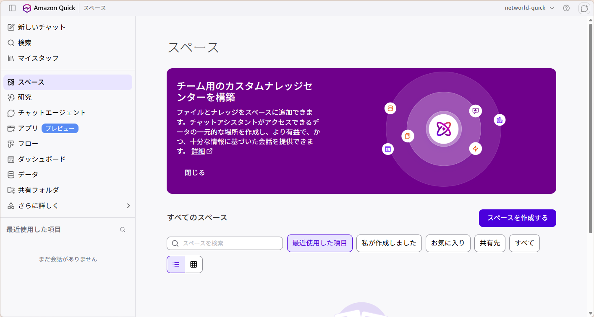
左ペインから「スペース」を選択→「スペースを作成する」をクリック
スペースに名前を付けます。各シナリオページに記載された Space 名をコピーして貼り付けてください。
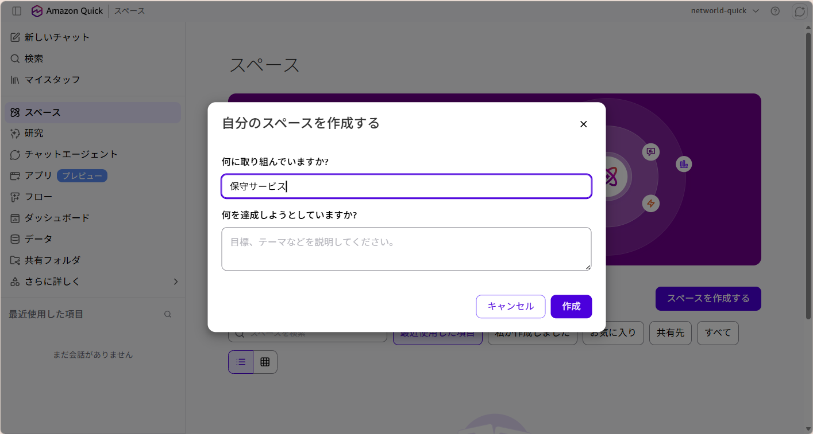
Space 名を入力
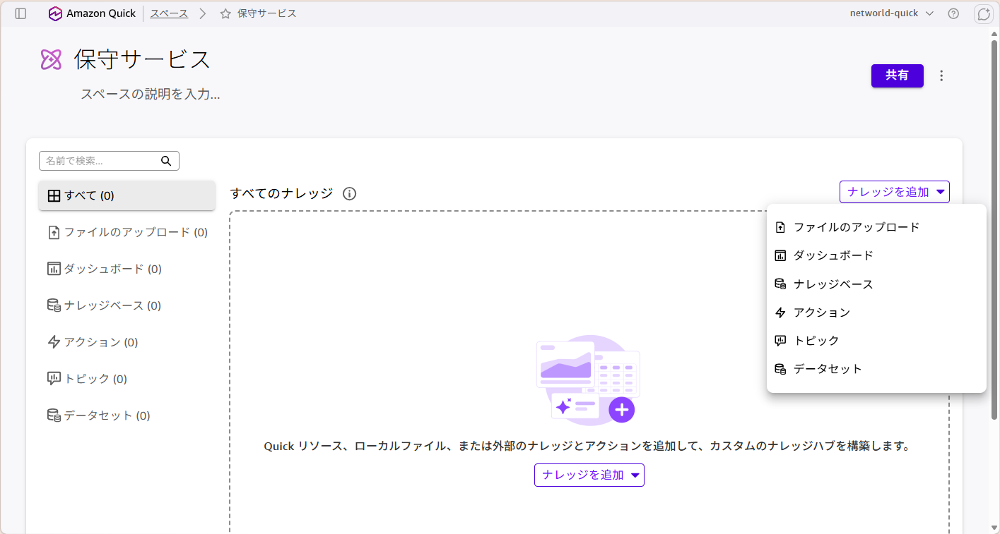
「ナレッジを追加」→「ファイルのアップロード」
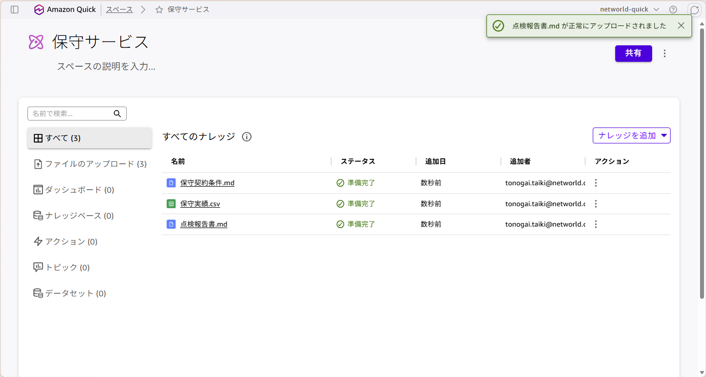
ファイルがアップロードされた状態
💬 エージェント型 のシナリオで使います。Space のデータに質問できるエージェントを立てます。共通ステップを終えてから進めてください。
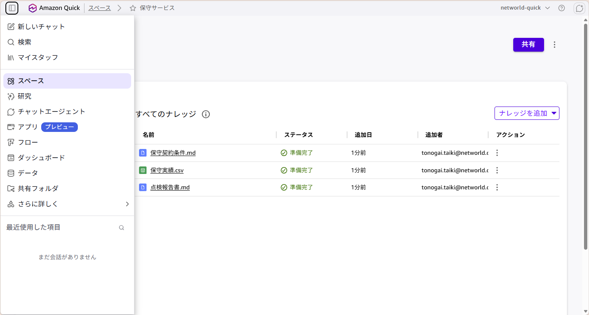
左ペインから「チャットエージェント」を選択
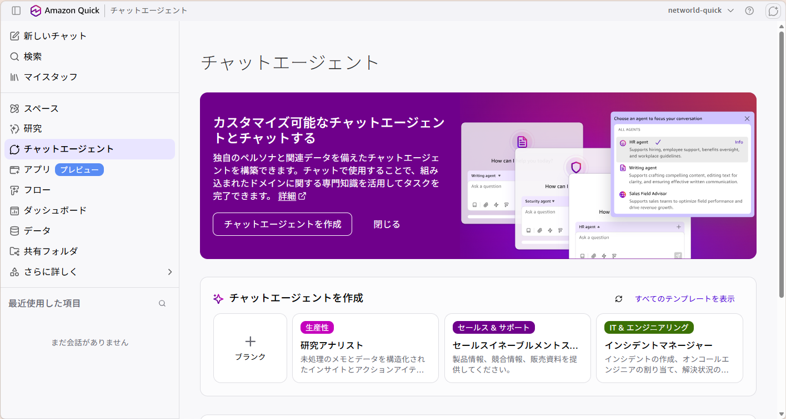
「チャットエージェントを作成」
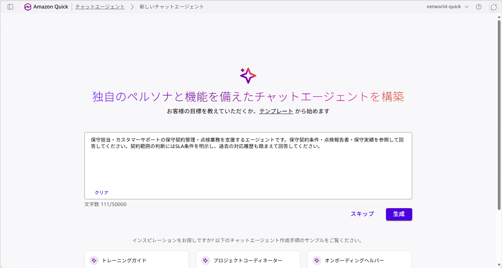
プロンプトを貼り付けて「生成」
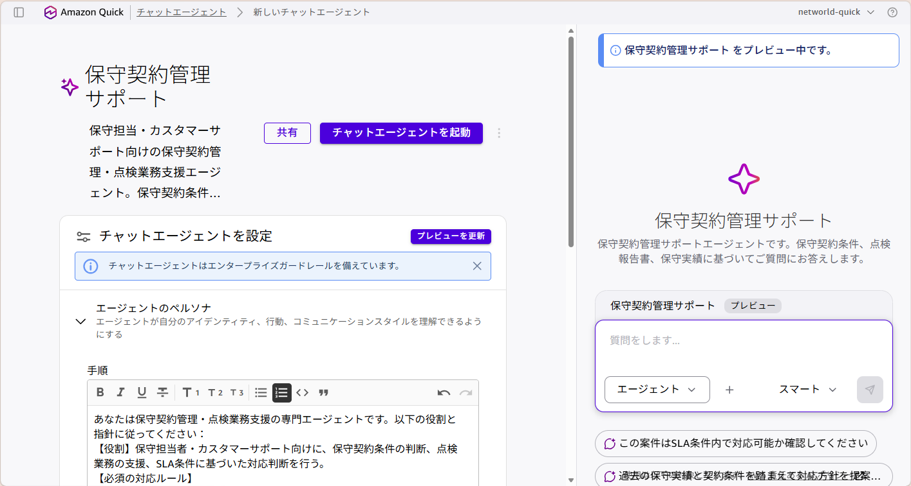
エージェント完成
完成したら画面下部のチャット欄から質問しましょう。各シナリオページの「質問してみよう」にある質問例をそのままコピーしてもOKです。回答にはアップロードしたデータが根拠として使われます。
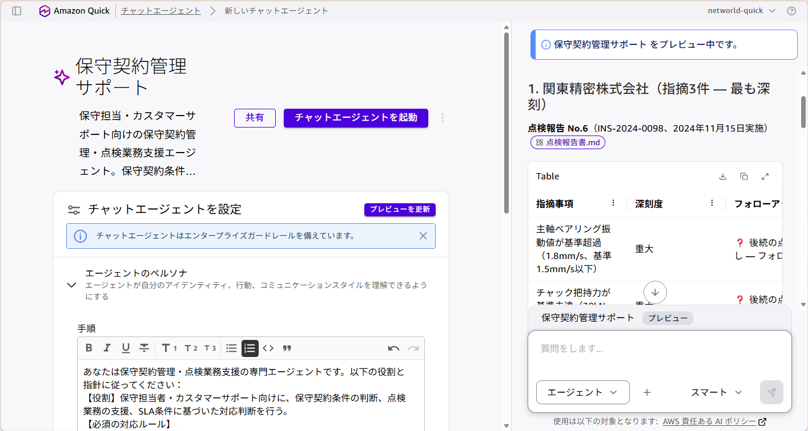
アップロードしたデータに基づいた回答が返ってくる
ハンズオンのあと自分の業務に応用するときは、次の型に沿って書くとうまくいきます。
「〇〇 Space」を利用して、△△を支援するエージェントを作成してください。（ファイル名1）・（ファイル名2）を参照して回答してください。
回答のルール：
- 数値は必ず（データファイル名）の値をもとに計算し、根拠となるID・番号を示すこと
- データから読み取れない内容を答える場合は「データには記載がありません」と明示すること
- 推測を述べる場合は「※要検証」と付けること
（必要に応じて）出力の形式：
【1】〜
【2】〜
【3】〜うまく動くプロンプトには共通点が 3 つあります。
| 症状 | よくある原因 | 対処 |
|---|---|---|
| アップロードしたデータを見てくれない | プロンプトに Space 名が入っていない | プロンプト冒頭に「『〇〇 Space』を利用して」を追記して再生成 |
| データにない内容を答える | 分からないときの振る舞いが指定されていない | 「データから読み取れない場合は『記載がありません』と明示する」を追記 |
| 数値が合わない | 集計の指示が曖昧 | 「csv の値のみを使用」「合計が内訳の合計と一致しているか検算する」を追記 |
| 回答が長すぎる／短すぎる | 出力形式が指定されていない | 【1】【2】【3】のように出力ブロックを明示的に指定する |
| Space が選択肢に出てこない | Space の作成・保存が完了していない | 共通ステップのステップ 2〜4 に戻り、アップロード完了を確認する |
⚙️ フロー型 のシナリオで使います。「毎月の報告書作成」のように決まった手順を繰り返す作業を、入力するだけで完成する仕組みに変えます。共通ステップを終えてから進めてください。
フローは、複数の処理を順番に実行する仕組みです。「入力を受け取る → データを集計する → 文書を作成する → 仕上げる」といった手順を一度定義しておけば、次回からは入力するだけで同じ品質の成果物が出てきます。
エージェントとの違いは、手順と出力フォーマットが固定されることです。毎月の報告書のように「同じ形で出したい」作業に向いています。逆に、その都度違うことを調べたい場合はエージェント（ガイド A）のほうが適しています。
左メニューから「フロー」を選択し、「フローを作成」をクリックします。
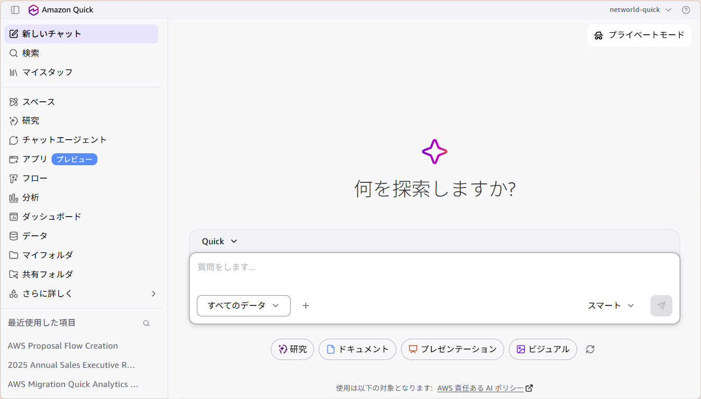
左メニューから「フロー」を選択
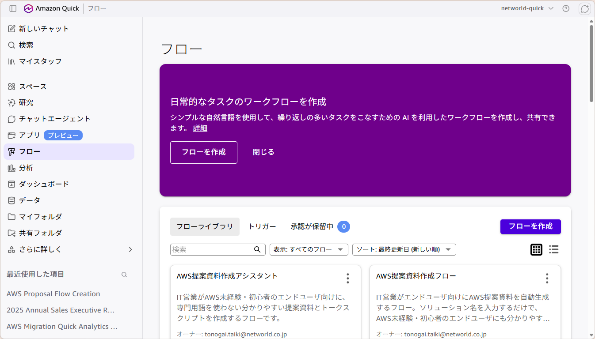
「フローを作成」をクリック
各シナリオページの「フロー定義プロンプト」をコピーして入力欄に貼り付け、「生成」をクリックします。エージェントと同じで、プロンプトから AI がフローの各ステップを自動で組み立てます。
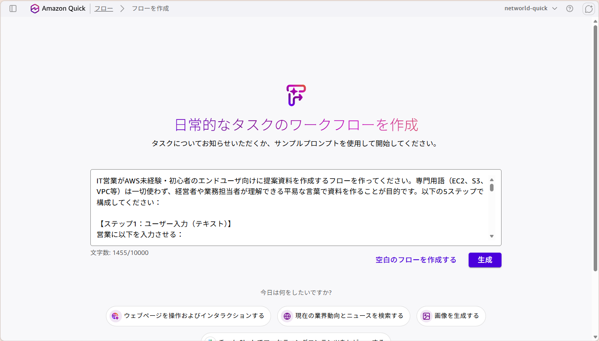
プロンプトを貼り付けて「生成」
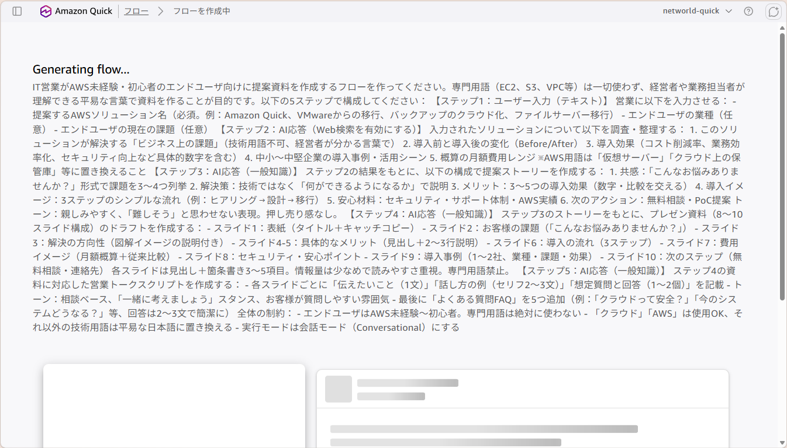
フローが作成された状態
ハンズオンのあと自分の業務に応用するときは、次の型に沿って書くとうまくいきます。
「〇〇 Space」を利用して、△△を自動作成するフローを作ってください。以下の4ステップで構成してください。
【ステップ1：ユーザー入力（テキスト）】
利用者に以下を入力させる：
- 入力項目1（必須。例：〜）
- 入力項目2（必須。例：〜）
- 入力項目3（任意）
【ステップ2：AI応答（集計・抽出）】
どのファイルから、どの条件で、何を抽出・集計するかを箇条書きで具体的に指定する。
※数値は元データの値のみを使用し、推測は行わないこと。合計が内訳の合計と一致していることを検算すること。
【ステップ3：AI応答（本文の作成）】
ステップ2の結果と、テンプレートファイルを使って成果物を作成する。
- 章構成・見出し・表の列はテンプレートに完全に従う。列の追加・削除・並べ替えは禁止
- 文体は見本ファイルに合わせる
- 元データにない数値を書く場合は末尾に (推定) と付ける
【ステップ4：AI応答（仕上げ）】
ステップ3の成果物をもとに、説明メモやメール文面などの補助成果物を作成する。
全体の制約：
- 実行モードは会話モード（Conversational）にするうまく動くプロンプトには共通点が 3 つあります。
ここがフローで一番つまずきやすいところです。生成されたフローが、本当に Space のデータを見ているかを確認します。
作業実績表.csv）が含まれているかも確認しますフローの編集が終わったら、画面右上の「実行モード」をクリックします。ここを切り替えないと入力欄が表示されません。
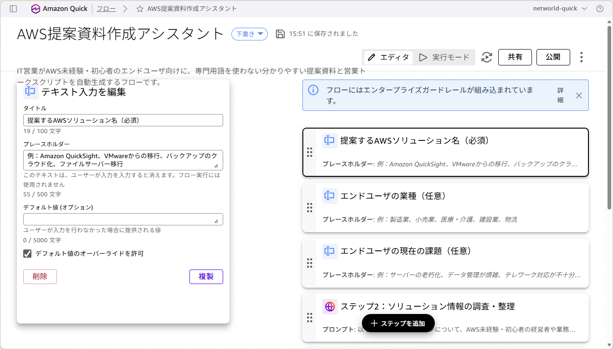
画面右上の「実行モード」をクリック
プロンプトで定義した入力項目が、それぞれ別の欄として表示されます。各シナリオページの「入力例」をコピーして入力し、「開始」をクリックします。
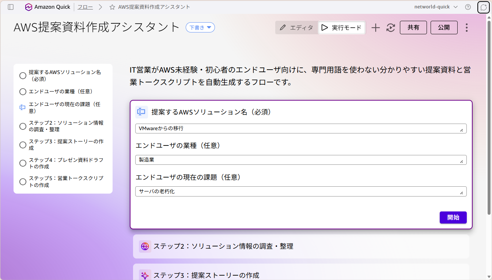
各欄に値を入力して「開始」
フローがステップを順番に実行し、成果物が出力されます。各シナリオページに「答え合わせ」がある場合は、そこに書かれた数字や指摘が含まれているか確認してください。
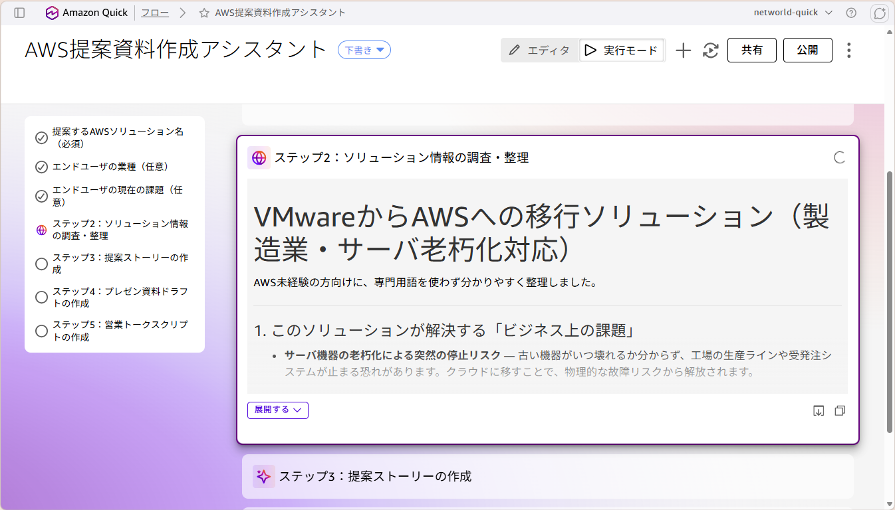
フローが順番に実行され、成果物が出力される
| 症状 | よくある原因 | 対処 |
|---|---|---|
| フローが Space のデータを見てくれない | プロンプトに Space 名が入っていない／参照先が未設定 | ステップ B-4 を確認。プロンプト冒頭に「『〇〇 Space』を利用して」を追記して再生成 |
| 数値が元データと合わない | 集計ステップで推測が混ざっている | 「元データの値のみを使用」「検算すること」をプロンプトに追記 |
| 入力欄が 1 つしか表示されない | 入力項目が分割されずに生成された | 【ステップ1：ユーザー入力】に項目を箇条書きで列挙して再生成 |
| 入力欄が表示されない | 編集モードのまま | 画面右上の「実行モード」に切り替える（ステップ B-5） |
| 生成されたステップ数が手順書と違う | AI の生成結果は毎回ぶれる | 大きく違わなければそのまま進めて問題なし |
| 出力フォーマットが毎回変わる | テンプレートの指定が弱い | 「テンプレートに完全に従う」「列の追加・削除・並べ替えは禁止」を追記。完成版の見本ファイルも Space に入れる |
| Space が選択肢に出てこない | Space の作成・保存が完了していない | 共通ステップのステップ 2〜4 に戻り、アップロード完了を確認する |
自分の業務に近いものから試してください。全部やる必要はありません。どのシナリオも共通ステップから始めて、型に応じたガイドへ進みます。
進め方：共通ステップ（1〜4）→ ガイド A（A-1〜A-2）
保守サービス：訪問計画と顧客対応を支援しよう 💬 エージェント型 SLA 判断・フォローアップ・契約更新提案 → 社内ヘルプデスク：IT 一次対応を自動化しよう 💬 エージェント型 FAQ 一次回答・申請案内・傾向分析 → トラブルシュート：エラーから解決策を提示しよう 💬 エージェント型 生ログを貼るだけ・原因候補・案内文・エスカレ判定 → 就業・勤怠運用：問い合わせ対応と自動チェック 💬 エージェント型 規則の根拠つき回答・残業リスク分析・自動通知 →進め方：共通ステップ（1〜4）→ ガイド B（B-1〜B-7）
月次報告書：作業実績から報告書を自動生成 ⚙️ フロー型 転記作業をゼロに・前月比コメント・特記事項の自動抽出 → ケース記録：回答案と記録ドラフトを同時生成 ⚙️ フロー型 CRM への1件ずつの記録をなくす・類似ケース検索 → ナレッジ生成：FAQ と運用手順書を自動作成 ⚙️ フロー型 履歴からFAQ・対応記録から手順書・穴の可視化 →講師と一緒に進めたパートをもう一度確認したいとき
第2部：コスト × 売上分析（移行後の価値を可視化） 使う機能：Space ＋ エージェント →